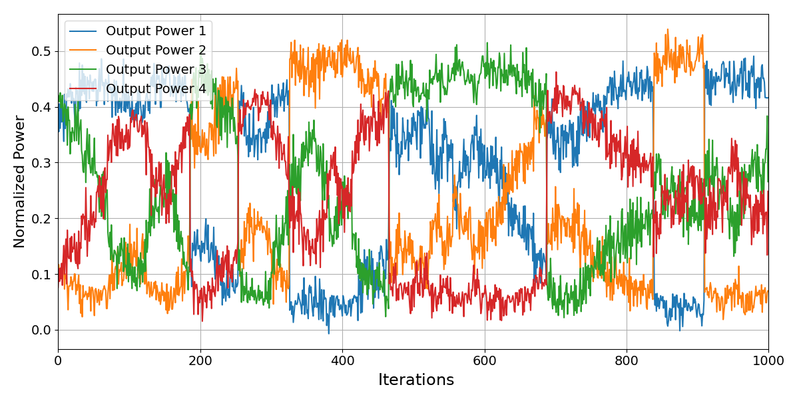
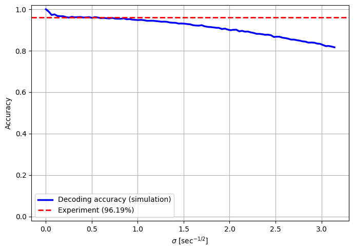
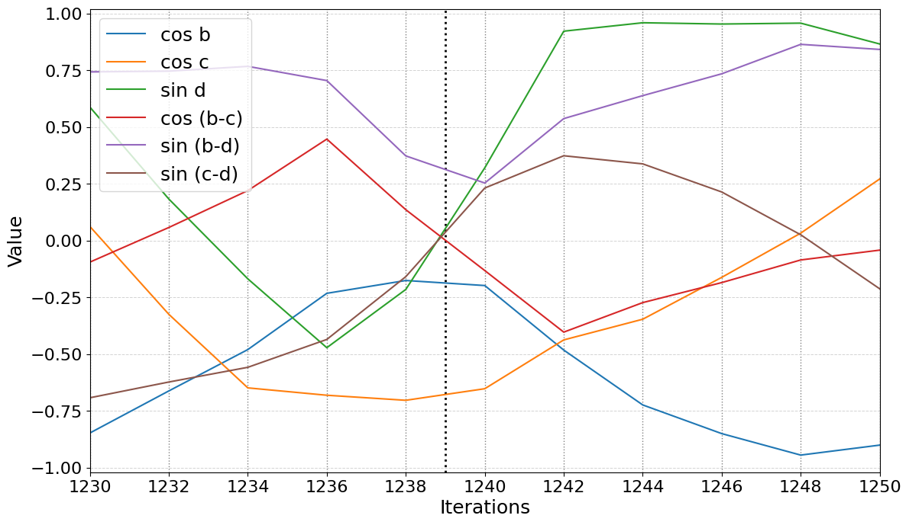
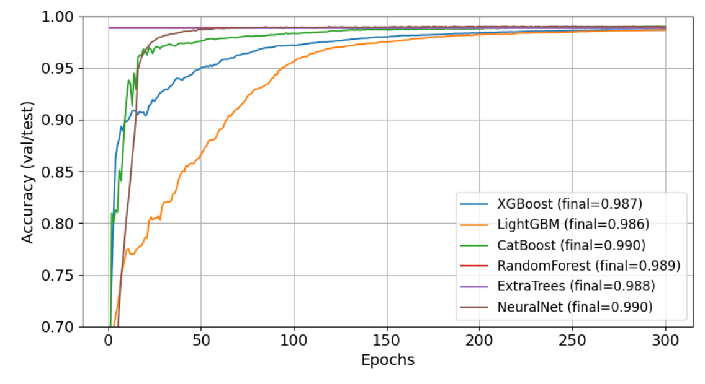
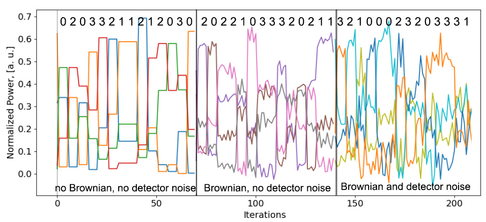

无源相位感知哈达玛解码：解析方法与机器学习方法
摘要
哈达玛编码的光接收机通常依赖稳定的干涉条件，因而往往需要主动的光学相位控制。本文研究一种固定的、仅利用光强的解码器：它在八模干涉仪中嵌入四个占用模式，并通过同时的功率测量给出六个互补的三角函数观测量。一种解析跃迁解码器利用由此得到的符号变化模式，无需连续的光学相位稳定。本文精确求逆该接收机的光强—观测量映射，并通过可辨识性分析刻画特殊的相位配置与条件性的噪声灵敏度。在理想的等光子预算条件下，与传统四端口哈达玛解码的对比表明了这些额外输出的潜在价值，但并不意味着无条件的优势。在可编程光子处理器上的测量中，解析解码实验的准确度为 96.19%；互补的机器学习分析在留出的实验轨迹上报告了 98.31%。这些结果表明，在所测试的条件下，仅用光强的相位感知方法可用于差分哈达玛解码，而更大的码本与硬件层面的能效优势仍有待未来研究。
1 引言
哈达玛编码长期以来一直是光通信与信号处理中的一项关键技术，因为它提供了正交码集，能够以较低复杂度实现编码与解码，同时具有良好的编码与判别特性 [1, 2, 3]。其中，4维哈达玛矩阵（）提供了一个紧凑且对称的基，便于将输入信号高效地映射为相互正交的图样，这些图样在理想的相位稳定环境中能够被可靠地区分。近年来集成光子学与量子光子学的进展进一步拓展了此类正交编码方案的适用范围，因为现代芯片平台可以直接高精度地实现复杂的光学变换 [4, 5, 6, 7]。
然而在实际中，现实的光学系统不可避免地受到由环境微扰、制造公差和传播效应引起的相位涨落的影响[8]。这些变化破坏了接收端相干干涉所需的相对相位关系，降低了干涉对比度并引入解码歧义，从而恶化链路性能。为在可编程光子系统中抑制此类影响，人们已发展出多种主动稳相与相位跟踪方案[9, 10, 8]。特别是，近期多输入相位稳定的实验实现已在片上演示了面向四输入 Hadamard 变换的反馈控制[24]。此外，基于 Hadamard 的联合检测也已通过实验得到验证：码字生成与解码分别由独立的可编程光子处理器完成，并采用主动稳相来维持所需的干涉条件[25]。这些方法虽然能够实现高保真运行，但也增加了控制复杂度、功耗和校准开销——在大规模或动态变化的光网络中，这些因素会变得十分关键。因此，用固定的解码变换取代连续的光学相位稳定，可以降低反馈与控制需求，有望减少相应的能量消耗。
输入相位涨落的重要性并不局限于传统相干通信。近期针对高斯玻色采样（Gaussian boson sampling）的研究考察了输入退相干对计算复杂度的影响，结果表明，即使存在输入相位噪声，计算上仍可保持具有挑战性的区域 [26]。这些发现进一步激发了对无需连续输入相位稳定即可运行的光子架构的研究兴趣，尽管可靠的码字判别所需的条件与玻色采样并不相同。为了克服光解码中的相位不稳定性限制，近期研究探索了无需显式反馈即可保持相位感知能力的无源策略与数据驱动策略。在此背景下，Hadamard 变换的结构提供了一条天然途径，可利用三角函数分量之间的确定性符号关系，即使相对光相位发生漂移也能实现耐相位的解码。此外，近期理论研究量化了对相位正交分量进行顺序测量的局限性，凸显了在不进行中间光路重配置的情况下获取互补相位信息的优势 [27]。光 Green Machine 利用无源 Hadamard 变换，将合适的相位编码输入转换为可用光强区分的输出 [14]；通用干涉仪则提供了一条互补的可编程途径，用于实现结构化变换 [13, 15]。光子信息处理与可编程器件方面的相关进展进一步提供了实现层面的背景 [12, 17, 19]。本文的贡献并非单纯提出相位敏感干涉或正交分量读出的一般原理。具体而言，我们针对三个未知输入相对相位下的差分 解码，设计了一种固定的八端口变换。其同步光强测量给出一组可精确重构的六个耦合三角观测量，其符号变换由四种允许的 Hadamard 码字跃迁所决定。与基于输出端口集中度的传统四端口解码不同，该架构利用了与跃迁相关的相位特征；与主动稳相方案不同，其解码规则无需连续的相位误差反馈来重新调谐解码器或补偿入射相对相位。我们还补充了可辨识性分析，刻画了奇异相位构型及条件噪声灵敏度，并对顺序跃迁解码进行了实验验证。由此得到的差分判决仍需参考特征，并且每个比较区间内的漂移必须足够小。
本文提出一种面向 Hadamard 编码光信号的无源相位感知解码框架，该框架在相位噪声下仍能稳健工作，且无需主动光相位稳定或相干探测。我们的方法在常规 解码概念基础上，引入一种定制的八维幺正变换，在显式感知相对相位变化的同时，保持所嵌入 Hadamard 码字的内积不变。该变换在被配置为固定解码器的可编程光子网格中实现，将输入的相位信息映射为可测量的输出光功率图样，并可从中解析地重建六个三角观测量。当跃迁发生时若相对相位参考足够稳定，这些观测量就满足确定性的符号变化规律，从而可与直接光强测量相区分。由此得到的符号图样检测器有别于绝对的、无需参考的符号解码器。此外，我们将解析重建与基于机器学习的分类相结合，在合成数据与实验数据上进行训练，从而在存在相位噪声与探测器噪声的条件下实现高准确度解码。因此，所提方法为降低光反馈需求的相位鲁棒光通信与信息处理提供了一条有前景的途径，而其基本原理也为推广到其他结构化相位码字族提供了可能。
2 理想 Hadamard 编码与解码
在不存在相位噪声或硬件缺陷的情况下，Hadamard 变换为光码字的编码与解码提供了一个优雅且高效的框架。我们采用归一化的 Sylvester 序 Hadamard 矩阵
的每一行定义一个码字，将光场均匀分配到所有模式上，同时与其他每个码字保持两两正交。这种正交性保证了只要相干性得以保持，原则上就能以零错误概率区分各符号。
从发射端的角度看，编码操作包括选取其中一个基态，并通过线性变换 将其映射为相应的 Hadamard 码字。所得状态是幅度均衡的叠加态，具有互不相同的相对相位配置；在理想条件下，它们经信道传播时仍保持相互正交。对于两个不同的归一化码字 和 ，正交性意味着 ；这并非任意归一化复向量之间可能的最大距离。它确实提供了所选正交码本内两两相等的间距。
在接收端，通过施加相同的变换来完成解码。对于 2 节中的西尔维斯特排序，，因此该过程能够精确恢复所传输的基态符号。这一性质不仅在代数上便于处理，而且具有明确的物理意义：仅需一次线性光学变换即可完成编码的逆变换，无需迭代过程、辅助模式或复杂的自适应检测策略。因此在理想情况下，接收端能以极小的计算开销实现无误码的符号恢复。
除了数学上的正交性之外，Hadamard 结构对光学实现还有若干实际意义。Hadamard 码字具有均衡的输入幅度，而理想地施加逆 Hadamard 变换会把每个解码后的码字集中到其对应的输出端口上。这一特性为输出端口判别提供了简明的依据。此外，该变换是实值且取二值的，这意味着编码与解码可以借助分光器（分束器）和移相器等无源光学元件实现，在此阶段无需主动调制。这些特点共同解释了 Hadamard 编码在经典光通信和量子光子学中广受青睐的原因。
这一理想化模型是一个有用的基准。它代表了通信性能的理论极限：在无噪声且相位稳定的环境中，Hadamard 编码仅依靠线性光学变换和直接功率测量，即可实现确定性的单位保真度解码。因此，它抽象出编码方案的数学本质，同时略去实践中不可避免的各种缺陷。在接下来的章节中，我们将放宽这些假设，分析相位噪声、制造公差和环境不稳定性如何扭曲判别所需的干涉图样。这为发展兼顾相位灵敏度与抗噪能力、同时保留无源光子学实现架构简洁性的扩展解码策略提供了动机。
3 相位噪声下的解码
在实际实现中，相位扰动会影响输入模式和内部干涉光路。我们的理想化模型将接收端变换固定不变，并用等效的输入相对相位来表示在该变换之前累积的扰动。在 Alice 端，若起伏仅在编码前对单一受激输入施加一个公共相位，则对所制备的码字没有影响。光场被分配到四条编码光路之后所引入的相位变化（包括传输路径上产生的相位变化）并非共模，必须计入接收端输入相位。同样，可编程解码器内部的任意变化通常无法被吸收为输入相位偏置；它们代表对理想固定的偏离。仅输出端口的固定相位不影响光强测量。这一划分明确了哪些相位噪声可被该模型精确处理，哪些硬件缺陷则不在其适用范围内。
模式 1–4 对应单个 Hadamard 码字的四个分量，即分布于四个物理输入通道、振幅相等的光场，其相对相位由所选 Hadamard 矩阵的行确定。在存在相位噪声时，这些通道会获得额外的、与模式相关的相位偏置。我们将模式 1 指定为相位参考。下文给出输入态模型、输出功率公式以及三角可观测量的提取方法，从而实现稳健解码。我们先回顾四维 Hadamard 变换，再将该方案扩展到八维框架。
3.1 四端口 Hadamard 解码
我们首先回顾存在相位噪声时的理想四端口 Hadamard 解码。每个发射符号对应 Hadamard 矩阵 的单行，编码为分布于四个物理输入模式、振幅相等的光场，其相对相位由所选行的 项确定。
选取模式 1 作为相位参考，Bob 的输入态可写为
| (1) |
其中 、 和 表示总相对相位，既包含编码的 或 偏置，也包含此后获得的相位噪声。
对归一化 Hadamard 矩阵 进行变换，得到四个输出功率，它们以二次形式依赖于这些相对相位。例如，
| (2) |
其余功率 （）可由类似的符号置换得到。
Hadamard 码字之间的跃迁对应于恰好翻转 Hadamard 行中两个分量的符号，等价于对两个输入模式施加 相移。在这样的跃迁下，三角项按 变换，从而导致输出功率元组 的置换。
3.2 示例：码字翻转与小噪声
我们通过考察两个 Hadamard 码字之间的跃迁来说明相位噪声对四端口 Hadamard 解码的影响。这种跃迁恰好改变 Hadamard 行中两个分量的符号，对应于对两个有光输入模式施加 相移。这里考虑模式 2 与模式 3 的翻转，对应于相对相位 和 。
计入参考测量与新测量之间的附加相位微扰 、 和 ，端口 1 的输出光功率为
其余输出端口的表达式可类似写出。
输出光功率的这种置换直接源于哈达玛变换的代数结构，无需小相位近似。定义输入符号翻转算符
| (3) |
对于第 2 节中定义的归一化、按 Sylvester 顺序排列的哈达玛矩阵 ，直接相乘可得
| (4) |
因此，若 表示码字切换前的输出，则在没有任何附加漂移的情况下
| (5) |
取模平方可知，输出光功率被 精确地置换：
| (6) | ||||||
该恒等式对任意初始相对相位 均成立，并不限于接近 或 的相位。
当测量之间进一步发生相位变化时，令 ，并定义端口置换为 、、 和 。 由于预期的输入符号翻转与附加相位移均为对角操作，测得的光功率满足
| (7) | ||||
其中 表示切换前的四端口光功率函数。 因此，置换本身是哈达玛代数的精确结果；只有当存在附加漂移时，与较早相位配置下测得的光功率进行比较才变为近似。该近似要求在比较区间内相位变化很小，且在任意快的相位涨落下并不提供保证。
3.3 扩展到八维框架
对于上述实值四端口哈达玛变换，输出光强包含余弦型干涉项，但不能直接给出互补的正弦型可观测量。为了在相对相位未知的情况下探索信息更丰富的光强特征，我们将四维哈达玛编码嵌入到一个八维无源干涉架构中，从而获得互补的相位可观测量。
逻辑哈达玛码字占据模式 1–4，对应于 单行的四个等幅分量。其余四个模式作为辅助通道，初始时未被占据。因此输入态为
| (8) |
其中 、 和 表示相对于模式 1 的相对相位偏移。
解码操作由一个固定的幺正变换 实现，
| (9) |
将 作用于 得到八个输出振幅，其对应的光强 同时包含对相对相位的余弦型和正弦型依赖关系。例如，
| (10) |
其余输出光功率由类似的组合给出。
所选变换在八个输出中给出了余弦型与正弦型干涉项的特定混合。 因此，仅凭光强测量即可解析重建出六个不同的三角可观测量。例如，
| (11) |
、、、 和 的精确表达式由式 (55)–(59) 给出。附录 A.1 证明，这六个量构成一个可线性恢复、但受相位约束的特征。
互补的三角函数依赖关系有助于避免仅含余弦的功率图样在过零点处的某些歧义，但不能保证存在与相位无关的统一裕量。光学解码变换在运行过程中保持固定，仅需功率检测，而无需相干场测量或输入相位的主动反馈。在热光编程的网格中，保持该固定变换仍可能需要电偏置功率。
3.4 与传统四端口解码的对照比较
传统的 Hadamard 接收机与八端口解码器都守恒总输入功率，但当编码模式获得未知的相对相位时，它们的光强特征的可分辨性未必相同。这一点无需指定相位噪声模型即可加以说明。按照第 2 节所示 Sylvester 矩阵的端口约定，取
| (12) |
传统接收机给出均匀的功率向量
| (13) |
四种 Hadamard 跃迁都只是对该元组进行置换而不改变它，因此对仅利用光强的传统解码器而言，这一特定相位配置是完全歧义的。若改为将式 (9) 的八端口幺正变换作用于式 (8) 的状态，则得到
| (14) |
四种候选的八端口功率特征彼此不同，最小可观测间隔为 （见附录 A）。这在所选工作点上确立了明确的优势，但并不意味着在所有相位和测量噪声条件下都一致占优。
为给出可复现且光子预算相等的比较，我们还仿真了理想光子计数判别，并将真实且保持不变的跃迁前相位三元组作为理想参考提供给判决规则（即神谕假设）。50,000 次试验中，每次独立试验均匀抽取 ，其取值范围为 ，等概率选取四种跃迁之一，并由相应的四输出或八输出多项式功率分布生成 个探测光子。对两种接收机均使用相同的总计数 ，并将使条件多项式似然最大的候选判为该跃迁。图 7 给出由此得到的理想模型错误率。在 处，传统四端口探测的仿真错误率为 ，八端口变换为 。该比较是在特定光子计数模型下检验光强特征；它并未复现实验中的序贯符号算法，未计入参考估计误差或观测窗口内的相位变化，也不能确立与硬件无关的优势。仿真细节与可复现代码随源文件一同给出。这种以参考为条件的接收机比较与所报道的机器学习解码器是相互独立的。
3.5 符号翻转结构与噪声鲁棒解码
八维解码器中余弦型与正弦型观测量同时具备，使得哈达玛码字跃迁能够以离散、抗噪的方式表示。如上所述，输出光强提供了六个互补的三角观测量，从而可以通过若干干涉项比较跃迁的符号。我们利用这一结构，聚焦于少量经解析重建的三角观测量的 符号。
具体而言，我们从测得的输出光功率重建出这六个量
并定义相应的符号向量
| (15) |
哈达玛码字之间的跃迁对应于将哈达玛行中恰好两个分量的符号取反，该跃迁在两个输入模式上以 相移实现。在这种跃迁下，三角观测量按确定性方式变换。例如，将与相位 和 相关联的哈达玛分量取反，会引起
而 和 保持不变。因此，每个码字跃迁都对应于符号向量 的一个固定的、已知的更新模式。
这种表示可以带来鲁棒性上的优势。除过零点附近外，三角观测量的符号在适度相位噪声下保持稳定，即使其幅度发生波动也是如此。此外，其他重建出的观测量可能仍离零足够远，足以支持跃迁判定。因此，所采用的解析策略是对 进行模式匹配，而非完整的相位估计；容噪能力取决于观测量的幅度、参考的稳定性以及探测器的统计特性。
在这一框架下，符号判别通过跟踪确定性的符号变化而非绝对相位值来实现，从而仅凭光强测量即可完成可靠、低复杂度的解码。
在接下来的各节中，我们通过实验验证这一解码策略，并借助数据驱动的分类器对其加以扩展，以进一步增强鲁棒性。
4 实验原理验证：Hadamard-2 解码器
为验证所提出的解码方案在真实光子学硬件上的可行性，我们使用简化的 Hadamard-2 解码器开展了一次原理验证实验。该实验是迈向高维哈达玛码可扩展实现的第一步。
我们从标准的 哈达玛矩阵出发：
| (16) |
其中，码字跃迁对应于两条输入臂之间的相对相移 。
为了在硬件中模拟高阶 解码方案的原理，我们将两个输入信道嵌入一个 幺正变换，从而把该变换扩展到四个输出模式。所选变换使得相对相位的余弦和正弦都直接出现在输出光功率中：
| (17) |
的各列是正交归一的，从而保证了幺正性与总光功率守恒。
对应于具有相对相位 的两个模式的输入态为
| (18) |
输出由 给出。四个探测器上测得的光功率随后为
| (19a) | ||||
| (19b) | ||||
由这些输出可以直接重建相对相位 ：
| (20a) | ||||
| (20b) | ||||
这种解析提取相位的方法使解码器能够连续跟踪 ，并识别对应于码字转换的突发 跳变。与高维情形类似，解码器选取幅值较大的三角分量（ 或 ），以抑制过零点附近的噪声敏感性。
4.1 正交观测量的极小极大最优性
同时重建 和 并非对相位敏感特征的任意选取，而是所有归一化方式相同的正弦观测量配对中，用于检测未知相位 跳变的极小极大最优选择。
为说明这一点，考虑两个占据数相同的光学输入模式，其相对相位为 。对于任意无源线性干涉仪，在输出端口 测得的光功率具有一般形式
| (21) |
其中 与 无关， 为干涉幅值， 由干涉仪确定。因此，从两个被占据模式可获得的任何相位相关的光强观测量，必然是一个平移并缩放后的正弦函数。
现在考虑两个归一化方式相同、相位相差任意偏移量 的相位观测量，
| (22) |
两个 Hadamard-2 码字之间的转换对应于
| (23) |
由此产生的观测量跳变为
| (24) |
其欧氏幅值的平方为
| (25) | ||||
| (26) |
因此，对于固定的间隔 ，在所有未知初相下最小的转换信号为
| (27) |
当满足下式时，该最坏情形取值最大
| (28) |
而这恰好对应正弦—余弦对。在该最优情形下，
| (29) |
and hence
| (30) |
对任意初相 均成立。
因此，正交表示不存在盲初相。只要一个分量接近零，与之互补的分量仍保持有限值。事实上，
| (31) |
所以在每一次 转换中，至少有一个重建观测量的幅值变化不小于 。
对于此处采用的四输出变换，
| (32) | ||||
| (33) |
极小极大最优观测量可直接重建为
| (34) |
因此，从原始光功率转向这些正交观测量，就把探测器输出转换为一种与相位无关的转换表示，其总跳变幅值恒定，且最坏情形下最强分量达到最大。
该最优性结论适用于归一化方式相同的正弦观测量配对。它并不主张在任意输出端口数目的所有可能无源测量中具有全局最优性。不同的多输出构造在特定探测器噪声模型下可能给出更大的原始功率区分度。正弦—余弦构造的最优性专门针对此处相关的极小极大意义：在双观测量相位表示中，它使对未知相位 跳变的最小可检测响应达到最大。
图 1 给出了 Hadamard-2 码字测试序列的实测输出功率。在随机选定的时间索引处，人工施加了相对的 相移，使输出曲线出现可见的不连续。在该实验轨迹中，全部七个施加相移的位置均被识别为转换：索引 186、254、326、466、688、838 和 910。

顺序解码器中的绝对码字标签取决于初始相位/码字参考。在双模情况下，可以采用不同的信令约定：无导频的基于操作的差分编码，其中信息是转换的有无，而非绝对相位值。
在该框架中，二进制信息并非由状态的绝对相位传递，而是由是否施加一个离散操作（即 相移）来传递。具体而言，比特值'0'对应于不施加操作，而'1'则通过施加 的相移来编码。Bob 使用重建的 连续监测相位，并将 跳变解读为'1'，而没有此类跳变则解读为'0'。
只要候选符号区间已知，接收端无需已知初始码字即可检测到所施加的相位操作。然而，这种比较使用来自相邻区间的观测，因此需要定时信息；该方案是差分式的，而非完全无记忆或无需同步的。
5 实验实现：Hadamard-4 解码器
Hadamard-4 解码器采用商用可编程光子处理器（QuiX Quantum）进行了实验实现，该器件基于低损耗氮化硅平台 [20, 21] 制备。 每个器件由通用多端口干涉仪网络构成，配有热光相移器，可对所实现的幺正变换进行完全重配置。 在我们的实验中，一个光子处理器被编程用于制备并编码 Hadamard 码字，而第二个处理器被配置用于实现八维解码变换。 通用干涉仪通过 Clements 分解 [22] 实现任意幺正操作，我们据此编译了本工作所需的定制 电路。 发射端制备了四模 Hadamard 码字，而接收端实现了式 (9) 中不同的八维幺正变换；解码芯片并非简单地实现第二个四模 Hadamard 变换。
每个码字对应于 矩阵的一行，并映射到四个光学输入模式。为提取编码信息，四模输入通过一个定制设计的 光学变换矩阵。该变换在八个输出端口之间产生特定的干涉图样，从而能够从所得光功率中提取出六个不同的三角相位分量。
三角变量由归一化实测功率 通过式 (11) 以及附录 A.1 中的完整关系式计算得到。对于所编程的理想变换和等幅四模输入，该反演是精确的；残差增益不平衡或对 的偏离会对其产生扰动。输出功率归一化消除的是共同的整体缩放，而非不相等的通道增益。
在实验中，Hadamard-4 码字被编码为四个输入通道上的相位状态，并按照预设序列随时间变化。码字之间的每次切换，都是按照 Hadamard 矩阵的结构要求，在四个输入模式中的两个上引入相移来实现的。解码器跟踪六个重建三角函数项的实测符号，并在 Hadamard 码本所允许的切换模式中进行搜索。该比较需要一个参考符号模式，并要求每个判决区间内的相位演化足够有限。
解码过程采用了一种顺序算法，持续监测六个三角函数量的符号，并将观测到的符号变化与已知的码字切换模式相匹配。初始码字作为参考，后续码字则依据观测到的符号变换推断得到。在实际实现中，优先选取实测绝对值最大的三个特征，如下文所述。该分析是一种顺序解码器；并不声称在没有初始化的情况下仍能实现绝对码字恢复。
在所报告的实验序列中，基于解析符号模式的解码器取得了96.19%的总体分类准确度。这确立的是在所采集序列上的性能，而非针对任意相位噪声速度、判决区间或器件缺陷的普遍上界。图3显示了重建的三角函数值，以及与 Hadamard-4 码字切换相对应的已识别切换点。 为进一步量化所提解码器对相位涨落的鲁棒性，我们采用 Wiener 相位扩散模型进行了数值仿真，
| (35) |
其中表示标准 Wiener 过程，为相位扩散强度，单位为。在采样间隔下，每个仿真相位增量满足。仿真检测通道中还加入了独立的加性高斯探测器噪声。扩散参数是仿真控制量，而不是通过拟合实验功率轨迹得到的估计值。
图2显示了解码准确度随相位扩散强度的变化。蓝色曲线对应数值仿真结果，红色虚线则表示实验获得的解码准确度 96.19%。实验准确度仅作为参考值给出；在没有实验扩散系数独立估计的情况下，该比较无法为实测轨迹指派唯一的相位噪声强度。仿真准确度随增大而逐渐下降，这是该数值模型的特性；在单独估计出实验扩散强度之前，不应把实验准确度对应到曲线上的某一点。

尽管取得了这些有前景的结果，但在面对较高的噪声水平或校准误差时，该解码策略仍存在固有局限。当相位噪声超过三角符号检测方案的容差阈值时，解码准确度会下降，导致预期码字的干涉特征被掩盖。过大的相位漂移或抖动会打乱相对相位关系，降低承载符号信息的干涉条纹的对比度。此外，制备与装调的不完善——例如波导尺寸、分光器分束比以及相移器校准的偏差——会引入相对于理想变换矩阵的系统性偏差，使输出光功率分布发生畸变。温度起伏和机械振动等热学与环境不稳定性会不可预测地改变光程，进一步降低相干性。此外，由探测器暗计数、散粒噪声和电子噪声引起的测量噪声限制了光功率测量的精密度，导致符号判定出错。
这些因素共同给解码器的工作范围带来了实际限制。解码算法假设六个三角量在每个码字处都保持稳定的符号模式；当噪声导致频繁的符号翻转或模糊的过零点时，码字的顺序匹配就会失效，从而导致解码失败。

为了在存在噪声和接近过零点的情况下提高解码可靠性，我们的实现优先选取每一步绝对值最大的三个三角量。具体而言，我们跟踪、、、、和的符号变化，并选取幅值最显著的三个量来判定码字过渡。例如，在索引1239处从码字 2 到码字 3 的一次典型过渡中，解码逻辑预测和都会发生符号变化。然而，如图4所示，并未出现预期的符号反转。这种不一致与相位起伏（包括类布朗漂移）相符：这类漂移会在光相位中引入随机涨落，并可能在某个三角分量接近零时掩盖符号过渡。这些情况凸显了在三角变量之间基于显著性进行动态选取的重要性，因为依赖幅值较小的项会增大对噪声诱发误差的敏感性。
此外，解码性能还受到信号采集系统精密度和噪声特性的影响。本实验所采用的采集硬件并非专门针对高分辨率、低噪声的光学测量而优化。因此，有限的测量分辨率和电子噪声可能在记录的输出功率中引入不确定度，这些不确定度会通过三角函数观测量的解析重建向下传播。当重建量接近零时，这些不确定度尤为关键：此时微小的测量偏差就可能导致符号判错，进而造成解码错误。与采集相关的噪声在总体解码错误率中的相对贡献并未被单独表征。
6 机器学习解码
在无相位稳定条件下求得正确码字的第二种方法是机器学习解码，它依赖于顺序推理：先前解码得到的符号提供相位参考，只有每个检测到的转变周围的微分跳变 被送入分类器。因此，单次转变由的八个分量加上类别标志"初始状态"（–）表示；需要学习的标签是随后的"最终状态"。
为训练和评估我们的解码器，我们采用了三个基于物理的合成数据集和两个实验数据集。 每个合成数据集包含个带标签的符号转变，并刻画一种不同的噪声情形： (i) 理想的无噪声处理器； (ii) 仅受布朗相位噪声干扰的同一处理器； (iii) 同时受布朗相位噪声和在我们硬件上测得的探测器增益噪声扰动的处理器（见图 2）。 随后我们记录了两段背靠背的实验轨迹，分别包含和次转变；我们用第一段进行微调，第二段严格保留用于盲测评估。 对于每次转变，我们都对原始功率作归一化，使得，从而得到九维特征向量（八个归一化功率差加上类别型的前一状态）以及四类目标标签。
训练了六个独立的学习器：XGBoost、LightGBM、CatBoost、随机森林（Random-Forest）、极端随机树（Extra-Trees），以及一个全连接神经网络（层 ，采用 线性整流单元（ReLU） 激活，Adam 优化器 ，连续 70 轮次无改进后早停）。对于树模型集成，我们使用 个估计器、深度 8–9、学习率 0.02–0.03；随机森林与极端随机树随后通过热启动追加 100 棵树。探索了两种课程方案。第一种方案中，三个仿真数据集依次各训练 200 轮次，随后在实验训练集上微调 50 轮次；第二种方案中，将各仿真数据集拼接后一次性打乱，训练 300 轮次，再在实验数据上微调 50 轮次。两种方案给出的统计结果完全相同，因此采用了合并课程——其墙钟时间快了 。
图 5 给出六种学习器的验证准确度随轮次的变化曲线。CatBoost 与神经网络在 40 轮次内即越过 线；XGBoost 紧随其后，而 LightGBM 上升较为平缓。阴影带（为避免图面杂乱未画出）在五次随机划分下均窄于 ，证实了良好的统计鲁棒性。图 6 说明了即便存在噪声，顺序编码依然有效：尽管布朗漂移使轨迹展宽（中图），探测器噪声又进一步使其模糊（右图），八维跳变向量仍形成可区分的簇。
| Model | Synthetic | Experimental |
|---|---|---|
| XGBoost | 0.9866 | 0.9817 |
| LightGBM | 0.9865 | 0.9685 |
| CatBoost | 0.9900 | 0.9442 |
| Random-Forest | 0.9888 | 0.9560 |
| Extra-Trees | 0.9879 | 0.9751 |
| Neural-Net | 0.9902 | 0.9340 |
| Soft-vote ensemble | 0.9906 | 0.9831 |
| Class | Precision | Recall | Support | |
|---|---|---|---|---|
| 0 | 0.98 | 0.98 | 0.98 | 334 |
| 1 | 0.98 | 0.98 | 0.98 | 348 |
| 2 | 0.99 | 0.99 | 0.99 | 351 |
| 3 | 0.98 | 0.99 | 0.99 | 330 |
| Macro avg | 0.98 | 0.98 | 0.98 | 1 363 |


表 1 总结了课程训练后的 Top-1 准确度。在留出的合成折上集成模型达到 ，在盲测实验轨迹上达到 。精密度、召回率和 在四个类别间保持均衡（见表 1），其中最弱的跃迁（）仍达到 。对混淆矩阵的检查显示只存在最近邻误判，与幅度为 的偶发相位滑移相符。
总之，一个由六个模型组成的紧凑集成系统，在基于物理的仿真数据与单段 90 s 实验轨迹的混合数据上训练后，把原始符号错误率降低了两个数量级以上，在未采取任何光学相位稳定措施的强扰动 光子处理器上实现了 的准确度。该方法可直接推广到更大规模的网格，并有望为通向高吞吐量可重构光网络提供一条低功耗、全无源的技术路径。
7 超越 Hadamard 跃迁的泛化能力
无源干涉仪将相位差映射为依赖光强的干涉项，这一原理并不限于 Hadamard 输入。然而，精确恢复、可分辨性以及对相位噪声的鲁棒性并不会自动推广到任意码本；它们取决于接收机与可用的测量。为陈述通用的代数原理，考虑一族相互正交、等幅的相位码字。将每个码字写为
| (36) |
并满足正交性条件
| (37) |
当这样的码字通过无源干涉仪 时，端口 处的输出场为
| (38) |
探测到的光功率为
| (39) |
对角项 贡献一个恒定偏置
| (40) |
而所有相位依赖均来自非对角干涉项。
一般酉干涉仪包含复值系数，因此每个乘积 都可写为
| (41) |
将输入相位差表示为
可见实值的光强测量必然同时包含两个三角正交分量：
| (42) |
Consequently,
| (43) |
with coefficients
| (44) |
这与式 (10) 和 (19) 中的定义一致。 当干涉仪的耦合系数具有适当的实部与虚部时，余弦和正弦两部分贡献都会出现；它们各自的可观测性取决于所选变换。耦合系数的实部贡献到余弦通道，而虚部贡献到正弦通道。
每个相位码字在相差一个整体相位的意义下，都可对应一个三角特征
| (45) |
码字之间的跃迁对应于这些特征的确定性变换。在 Hadamard 编码系统中，它们表现为 中的符号翻转；而对于一般码本，则涉及多个余弦和正弦分量的同步变化。不过，其结构仍然是完全确定性的。
当每个模式上存在微小相位噪声 时，各相位差将偏移为 其中 。一阶展开给出
| (46) | ||||
| (47) |
这说明两个正交分量表现出互补的噪声响应。当其中一个观测量因过零而变得不可靠时，另一个通常仍然很强，从而提供内在冗余，增强鲁棒性。
8 结论
我们开发并实验测试了一种固定的八端口光子接收机，仅利用强度测量进行差分Hadamard-4解码。所选酉变换将三个有效输入相对相位映射为六个三角可观测量，这些可观测量可通过八个输出功率的显式线性组合恢复。贡献在于组合接收机构造、同时可观测量重建，以及在无需连续光学相位反馈的情况下进行Hadamard特定跃迁判别，而非单独考虑的正交检测。附录证明四个跃迁特征的精确重建与几乎处处可区分性，指出24种例外配置，并给出以已知稳定参考为条件的噪声界。
实验分析解码器在无需连续光学相位反馈的情况下，在其测量序列上达到96.19%的准确度。另一项机器学习分析在其留出的实验测试数据上报告了98.31%。由于本文未将这两项评估确立为匹配的正面对比测试，其百分比作为单独的实验结果呈现。两项结果均未证明无参考绝对码字识别，或对快速相位扩散的无限制耐受。
我们还在明确理想化的等检测光子模型下，比较了传统四端口Hadamard解码器与所提出的八端口接收机。增加的输出解决了四端口接收机的一个示例相位模糊，并在所述数值比较中减少了条件分类错误。这些结果指出了一个有用的设计权衡；它们并不保证在任意光学损耗、探测器噪声或漂移参考下具有优越性。
潜在方向包括结构化相位编码经典链路、光码分多址，以及可编程光子电路中的相位敏感预处理。应用于非Hadamard码本和量子光子测量将需要单独的接收机设计与测量分析。同样，固定光学变换避免了连续输入相位反馈，但并不意味维持热光偏置在电学上是无代价的。实际功耗、延迟、可扩展性和网络级性能仍有待测量。
资助
本工作由DFG通过资助号NO 1129/2-1资助，并由德国联邦教育与研究部通过资助号16KIS1598K、16KISQ093、16KISQ077和16KIS2604资助。衷心感谢巴伐利亚州通过6GQT项目给予的慷慨支持。最后，作者感谢德国联邦教育与研究部在“Souverän. Digital. Vernetzt.”计划中提供的资助。联合项目6G-life，项目标识号：16KISK002。
披露
作者声明无利益冲突。
数据可用性
本文所呈现结果所依据的数据可在合理请求下向通讯作者获取。
References
- [1] Li, W., Wang, D., and Liu, J., 2024." Robust Walsh–Hadamard Transform Based Imaging Method for Low-SNR Scenes." Sensors, 24(10), 3062. https://doi.org/10.3390/s24103062
- [2] Wei, Z. and Ghafouri-Shiraz, H., 2002. "Codes for spectral-amplitude-coding optical CDMA systems." Journal of lightwave technology, 20(8), p.1284.
- [3] Noshad, M. and Brandt-Pearce, M., 2016. "Hadamard-coded modulation for visible light communications." IEEE Transactions on Communications, 64(3), pp.1167-1175.
- [4] Luo, W., Cao, L., Shi, Y., Wan, L., Zhang, H., Li, S., Chen, G., Li, Y., Li, S., Wang, Y. and Sun, S., 2023. "Recent progress in quantum photonic chips for quantum communication and internet.", Light: Science & Applications, 12(1), p.175.
- [5] Flamini, F., Spagnolo, N. and Sciarrino, F., 2018. "Photonic quantum information processing: a review.", Reports on Progress in Physics, 82(1), p.016001.
- [6] Aghaee Rad, H., Ainsworth, T., Alexander, R.N., Altieri, B., Askarani, M.F., Baby, R., Banchi, L., Baragiola, B.Q., Bourassa, J.E., Chadwick, R.S. and Charania, I., 2025. "Scaling and networking a modular photonic quantum computer.", Nature, 638(8052), pp.912-919.
- [7] Maring, N., Fyrillas, A., Pont, M., Ivanov, E., Stepanov, P., Margaria, N., Hease, W., Pishchagin, A., Lemaître, A., Sagnes, I. and Au, T.H., 2024. "A versatile single-photon-based quantum computing platform." Nature Photonics, 18(6), pp.603-609.
- [8] Elmas, G., Litvin, I., Kohl, P., and Nötzel, J., 2025. "Modeling and analysis of phase instability in photonic processors." Applied Optics, 64(14), 3995-4003.
- [9] Litvin, I. A., Elmas, G., El-Safty, K., Chaudhary, S., and Nötzel, J. (2025). "Robust calibration and energy optimization in reconfigurable photonic processors." Optics Express, 33(16), 35011-35027.
- [10] I. A. Litvin, G. Elmas, P. Kohl and J. Nötzel, "Stable Signal Processing with a Photonic Processor," in Journal of Lightwave Technology, doi: 10.1109/JLT.2025.3606027.
- [11] G. Elmas, I. A. Litvin, and J. Nötzel, “Local Variance-Based Calibration of Programmable Photonic Interferometer Meshes,” Journal of Lightwave Technology, submitted for publication, 2026. [Online]. Available: https://arxiv.org/abs/2607.14759.
- [12] Madsen, L. S., Laudenbach, F., et al., 2022." A quantum computational advantage with a programmable photonic processor." Nature, 606(7912), 75–81. https://doi.org/10.1038/s41586-022-04725-x
- [13] Reck, M., Zeilinger, A., Bernstein, H.J. and Bertani, P., 1994. "Experimental realization of any discrete unitary operator." Physical review letters, 73(1), p.58.
- [14] Cui, C., Postlewaite, J., Saif, B.N., Fan, L. and Guha, S., 2025. "Superadditive communication with the green machine as a practical demonstration of nonlocality without entanglement." Nature Communications, 16(1), p.3760.
- [15] Qiang, X., Zhou, X., Wang, J., Wilkes, C.M., Loke, T., O’Gara, S., Kling, L., Marshall, G.D., Santagati, R., Ralph, T.C. and Wang, J.B., 2018. "Large-scale silicon quantum photonics implementing arbitrary two-qubit processing." Nature photonics, 12(9), pp.534-539.
- [16] Shen, Y., Harris, N. C., Skirlo, S., et al., 2017. "Deep learning with coherent nanophotonic circuits." Nature Photonics, 11(7), 441–446.https://doi.org/10.1038/nphoton.2017.93
- [17] Harris, N.C., Steinbrecher, G.R., Prabhu, M., Lahini, Y., Mower, J., Bunandar, D., Chen, C., Wong, F.N., Baehr-Jones, T., Hochberg, M. and Lloyd, S., 2017. "Quantum transport simulations in a programmable nanophotonic processor." Nature Photonics, 11(7), pp.447-452.
- [18] Kudyshev, Z. A., Shalaev, V. M., and Boltasseva, A., 2021. "Machine Learning for Integrated Quantum Photonics." ACS Photonics, 8(1), 34–46. doi:10.1021/acsphotonics.0c00960.
- [19] C. G. H. Roeloffzen et al., "Low-Loss Si3N4 TriPleX Optical Waveguides: Technology and Applications Overview," in IEEE Journal of Selected Topics in Quantum Electronics, vol. 24, no. 4, pp. 1-21, July-Aug. 2018, Art no. 4400321, doi: 10.1109/JSTQE.2018.2793945.
- [20] Caterina Taballione, Tom A. W. Wolterink, Jasleen Lugani, Andreas Eckstein, Bryn A. Bell, Robert Grootjans, Ilka Visscher, Dimitri Geskus, Chris G. H. Roeloffzen, Jelmer J. Renema, Ian A. Walmsley, Pepijn W. H. Pinkse, and Klaus-J. Boller, "8×8 reconfigurable quantum photonic processor based on silicon nitride waveguides," Opt. Express 27, 26842-26857 (2019)
- [21] Bogaerts, W., Pérez, D., Capmany, J., Miller, D. A., Poon, J., Englund, D., … & Melloni, A. (2020). "Programmable photonic circuits." Nature, 586(7828), 207-216.
- [22] Clements, W. R., Humphreys, P. C., Metcalf, B. J., Kolthammer, W. S., & Walmsley, I. A. (2016). "Optimal design for universal multiport interferometers." Optica, 3(12), 1460-1465.
- [23] David A. B. Miller, "Perfect optics with imperfect components," Optica 2, 747-750 (2015)
- [24] I. A. Litvin, G. Elmas, P. Kohl, and J. Nötzel, “Multi-input signal phase stabilization in photonic processors with on-chip feedback control,” Optics Express, 34(6), 11244–11258 (2026), doi:10.1364/OE.579969.
- [25] I. A. Litvin, G. Elmas, and J. Nötzel, “Joint Detection on Reconfigurable Photonic Processors With Multi-Input Phase Stabilization,” IEEE Photonics Journal (2026), doi:10.1109/JPHOT.2026.3683204.
- [26] M. Parýzková, C. S. Hamilton, I. Jex, M. Stefszky, and C. Silberhorn, “Input phase noise in Gaussian boson sampling,” Physical Review A, 114, 022203 (2026), doi:10.1103/pddb-5z5q.
- [27] G. Elmas, I. A. Litvin, and J. Nötzel, “Phase-Drift Limits and Adaptive Quadrature Readout in Programmable Photonic Processors,” arXiv:2608.02249 (2026).
- [28] Durt, T., Englert, B. G., Bengtsson, I., & Życzkowski, K. (2010). "On mutually unbiased bases." International journal of quantum information, 8(04), 535-640.
附录 A Hadamard码字跃迁的代数可辨识性与噪声鲁棒性
A.1 由输出功率精确重建
A.2 Hadamard 跃迁算符
相位 相对于第一个有布居的输入模式。对于第一分量固定的四维 Hadamard 码本，允许的跃迁为不变，或恰好两个相位发生 的偏移：
| (60) |
它们通过对角符号矩阵作用于 ，即 ，其中
| (61) | ||||
| (62) | ||||
| (63) | ||||
| (64) |
这些矩阵满足 和 ，并具有相应的循环恒等式。因此，跃迁群同构于 。
A.3 几乎处处可辨识性
定理 A1（几乎处处可辨识性）。 除一个有限集外，对于每个 ，四个候选签名 、、 和 两两不同。
证明。 对任意两个候选者，定义
| (65) | ||||
第二个等式成立，是因为这些相互对易的符号矩阵正交且对称。因此，每个两两距离都是以下之一：
| (66) | ||||
| (67) | ||||
| (68) |
每个右端项都是非负项之和，并且仅当每一项都为零时才为零。它们的零集为
| (69) | ||||
| (70) | ||||
| (71) |
每个族在 中有八个成员，且这些族互不相交。因此，恰好有 24 个例外相位组态。在所有其他组态下，每个非恒等跃迁距离都为正，所以四个候选者两两不同。
推论 A1。 如果 的概率分布关于 Lebesgue 测度绝对连续，则精确跃迁歧义的概率为零。
这涉及从已知且不变的参考签名进行跃迁识别，而不是在没有初始态的情况下进行绝对码字识别。
A.4 最小签名间距
Define
| (72) |
定理 A1 表明，在例外集之外有 ，但 在该集合附近趋于零。因此，该结果并不能给出相位均匀的噪声裕度。
A.5 理想光子计数比较协议
第3.4节中的四端口/八端口定量比较是数值理想模型基准，独立于两种实验解码算法。跃迁前相位以无不确定度的方式提供给两个接收器，每次试验使用相同固定数量的探测光子，并在四种可能跃迁上最大化条件多项似然。每个随机相位三元组在上独立且均匀抽取，真实跃迁均匀随机。该基准排除了检测区间内的相位漂移、损耗和信道相关探测器效应，以及跃迁前参考的不确定度。有限样本估计如图7所示；可重现性代码和精确计数包含在随附源档案中。
A.6 高斯噪声下的条件误差界
假设参考已知，并在跃迁比较期间保持固定，将重建观测建模为
| (75) |
考虑最小距离解码器
| (76) |
证明。 对于错误假设，令 。 仅当以下条件成立时，解码器才可能偏好：
| (78) |
由于服从方差为 的高斯分布，该事件的概率为
| (79) |
有三个错误假设，且每一对之间的距离 至少为。联合界结合平凡上界 1，证明了式（77）。
该界适用于参考已知的理想最近签名解码器。它不能直接界定测量间存在漂移时的仅符号序贯解码器。
A.7 相关可观测噪声
六个可观测量由相同的八个功率重建，因此它们的测量误差可能相关。令
| (80) |
应用精确线性重建得到
| (81) |
and consequently
| (82) |
If , then
| (83) |
因此，各向同性可观测噪声模型对应于八个未归一化功率上的独立、等方差加性噪声。如果先将记录的功率除以其波动和，则所得归一化通常会引入通道间相关性，并且必须指该处理步骤之后的协方差。不相等的探测器方差和其他噪声机制也可能产生非各向同性可观测噪声。
对于具有固定正定协方差 的高斯可观测噪声，最大似然规则为
| (84) |
Define
| (85) |
高斯成对误差论证给出
| (86) |
这些结果在明确的测量模型下建立条件可区分性。它们不假设布朗相位演化在任意长的比较区间内可忽略，也不提供任意相位漂移或参考估计不准确条件下的无条件保证。